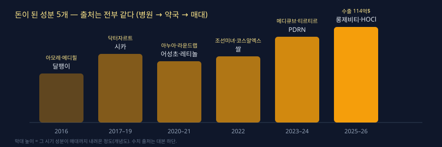

0:00훅
지난 10년 동안 화장품으로 돈이 된 성분은 다섯 개입니다.
달팽이, 시카, 어성초, 쌀, 그리고 PDRN.
이 다섯 개는 전부 같은 곳에서 나왔습니다.
그 곳이 어디인지 알면, 다음 성분이 어디서 나올지도 보입니다.
10년을 3분 안에 정리하고, 최근 1년은 따로 떼서 말씀드리겠습니다.
0:40자기소개·선언
저는 뷰셀입니다. 5개월 동안 화장품 셀러 200명을 배출했습니다.
오늘 영상은 트렌드 감상이 아닙니다.
"그때 뭐가 팔렸는가"가 아니라, "왜 그게 팔렸고 다음은 뭔가"입니다.
연도별로 성분, 키워드, 그 해의 강자. 이 세 가지만 말합니다.
끝에 반짝 유행과 해외에서만 있었던 것들도 따로 정리합니다.
1:30정의·프레임
먼저 기준 하나를 놓겠습니다.
화장품 성분에는 유행 경로가 있습니다.
병원에서 시작해서, 약국을 거쳐, 올리브영에서 끝납니다.
시술실에서 쓰던 것이 더마 브랜드로 내려오고, 그다음 로드샵과 인디 브랜드로 퍼집니다.
올리브영 매대에 깔렸을 때는 이미 3단계입니다. 그때 들어가면 늦습니다.
10년 치를 이 기준으로 보면, 전부 같은 그림입니다.
3:00핵심 1: 2016년부터 2020년까지

2016년.
성분은 달팽이 점액의 끝물, 키워드는 마스크팩과 쿠션.
강자는 아모레퍼시픽. 설화수, 라네즈, 아이오페 쿠션. 그리고 메디힐 마스크팩.
수출의 37%가 중국이었습니다. 중국 하나로 굴러가던 해입니다.
2017년.
3월, 사드 보복. 중국 관광객이 끊깁니다.
로드샵이 무너지기 시작합니다. 미샤, 더페이스샵, 토니모리.
그런데 같은 해, 닥터자르트가 시카페어 크림을 냅니다.
성분은 시카, 병풀 추출물. 원래 상처 치료에 쓰던 것입니다. 병원에서 온 첫 번째 성분입니다.
2018년.
시카의 해. 더마 코스메틱이라는 말이 생깁니다.
올리브영이 로드샵 자리를 먹기 시작합니다.
강자는 닥터자르트, 그리고 중국 따이공으로 매출을 만든 JM솔루션 마스크팩.
5월, 로레알이 3CE를 삽니다. 인디 브랜드가 돈이 된다는 첫 신호입니다.
2019년.
로드샵은 폐점, 인디 브랜드는 온라인으로 갑니다.
11월, 에스티로더가 닥터자르트를 약 1조 7천억에 인수합니다.
시카가 "성분이 브랜드를 팔 수 있다"를 증명한 해입니다.
키워드는 비건, 클린뷰티. 해외에서 먼저 시작된 말입니다.
2020년.
코로나. 마스크 때문에 색조가 죽습니다.
대신 마스크 트러블, 이른바 마스크네가 생깁니다.
진정 성분이 다시 팔립니다. 시카, 티트리, 판테놀.
그리고 이 해에 온라인에서 조용히 큰 브랜드가 셋 있습니다. 라운드랩, 토리든, 아누아.
로드샵이 비운 자리를, 매장 없는 브랜드가 채웠습니다.
5:00핵심 2: 2021년부터 2024년까지
2021년.
성분은 어성초와 레티놀.
아누아 어성초 토너가 화해 1위를 찍습니다. 병풀 다음 진정 성분입니다.
레티놀은 원래 처방 성분입니다. 병원에서 온 두 번째 성분입니다.
키워드는 슬로우에이징. 안티에이징을 20대에게 파는 말입니다.
2022년.
엔데믹. 마스크를 벗습니다. 립이 폭발합니다. 롬앤, 페리페라.
성분은 쌀. 조선미녀 쌀 선크림이 미국 틱톡에서 터집니다.
그리고 코스알엑스 달팽이 에센스. 국내에서는 끝난 성분이 해외에서 다시 팔립니다.
이 해부터 국내 트렌드와 해외 트렌드가 갈라집니다.
2023년.
PDRN이 화장품에 들어옵니다. 연어 DNA. 리쥬란 시술 성분입니다.
병원에서 온 세 번째 성분이고, 가장 비싼 성분입니다.
10월, 아모레퍼시픽이 코스알엑스를 삽니다.
강자는 대기업이 아니라 인디. 아누아, 조선미녀, 스킨1004, 달바.
2024년.
수출 100억 달러를 처음 넘깁니다. 미국이 중국을 제칩니다.
4월, 티르티르 쿠션이 미국 틱톡에서 터집니다. 흑인 크리에이터가 "내 색이 없다"고 올렸고, 티르티르가 색을 만들었습니다.
메디큐브의 에이피알이 뷰티 디바이스로 미국을 엽니다.
성분은 PDRN, 엑소좀, 콜라겐, 펩타이드. 전부 시술실 단어입니다.
여기까지 보면 답이 나옵니다.
시카, 레티놀, PDRN. 돈이 된 성분은 전부 병원에서 내려왔습니다.
7:00로드맵·솔직 구간: 최근 1년, 그리고 반짝했던 것들
2025년부터 지금까지.
수출 114억 달러, 역대 최대. 올해 상반기만 70억 달러, 전년 대비 27% 증가.
그중 미국이 14억 5천만 달러. 41% 늘었습니다.
강자는 메디큐브입니다. 올해 1분기 아마존 뷰티 점유율 14.1%, 단일 브랜드 1위.
그다음 아누아, 조선미녀, 스킨1004, 토리든, 티르티르.
8월에는 올리브영이 고른 19개 브랜드가 미국 세포라 500개 매장에 들어갔습니다.
성분은 셋으로 정리됩니다.
첫째, PDRN 대중화. 이제 3단계, 올리브영 매대입니다.
둘째, 롱제비티. NAD+, 피부 수명이라는 말이 앰플에 붙습니다.
셋째, 하이포클로러스 애시드와 엑토인. 백혈구가 만드는 면역 물질, 극한 미생물 보호 성분. 아직 1단계입니다.
그리고 성분보다 제형입니다.
성분이 상향 평준화되니까, "어떤 질감인가"로 갈립니다. 디저트 제형, 젤리, 슬러시.
여기서 솔직하게 하나.
10년 동안 반짝하고 사라진 것도 많습니다.
2016년 탄산 마스크. 2018년 물광 앰플. 2020년 핸드크림 붐. 2023년 글루타치온 필름. 2024년 콜라겐 젤리 마스크.
전부 국내에서 6개월 안에 식었습니다.
해외에서만 있었던 것도 있습니다.
2016년 미국의 "K뷰티 10단계 루틴". 2019년 중국 퍼펙트다이어리의 C뷰티, 2022년에 무너졌습니다. 2022년 틱톡 슬러깅, 바세린 얼굴에 바르기. 2024년 모닝 셰드.
국내에는 오지 않았습니다.
반짝 유행과 돈 되는 성분의 차이는 하나입니다. 출처가 병원이냐, SNS냐.
SNS에서 시작한 건 SNS에서 끝납니다.
8:30실행 과제
오늘 당장 할 것 셋입니다.
첫째, 위 10년 표를 저장하세요. 설명란에 넣어둡니다.
둘째, 지금 소싱하려는 제품의 대표 성분이 1단계인지 3단계인지 확인하세요. 3단계면 가격 경쟁만 남습니다.
셋째, 대기업 인수, 해외 매장 입점, 아마존 1위. 이 세 가지 뉴스가 뜬 브랜드만 봅니다. 물량과 정품 공급이 안정되는 순간입니다.
9:20마무리·구독
지금 시작하실 분은 설명란 카페에서 시작 체크리스트를 받아가시면 됩니다.
뷰셀이었습니다.